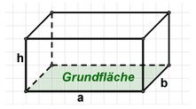
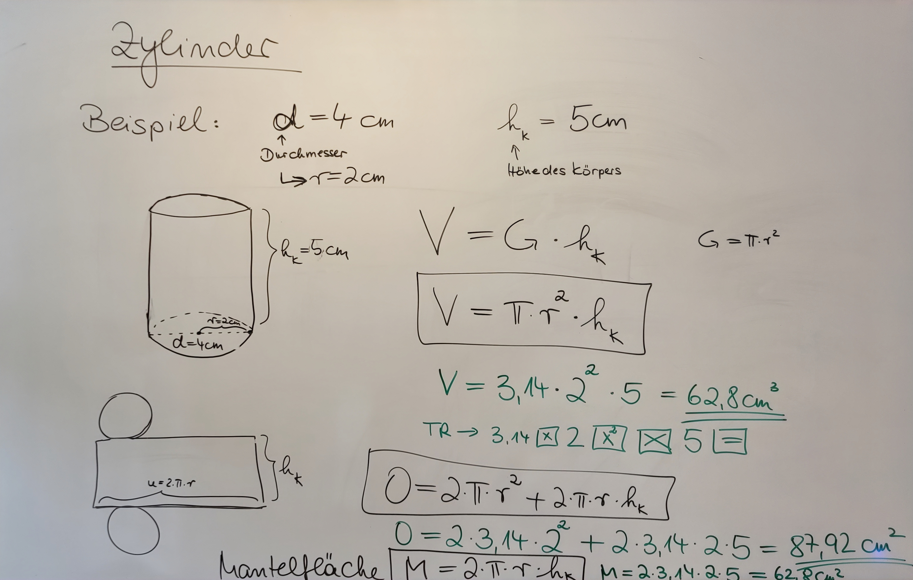
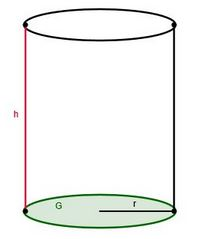
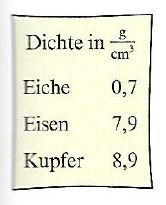

Geometrie im Raum
| Website: | Schulische Weiterbildung & Lernwelt @ VHS Essen |
| Kurs: | 1./2. Fachsemester Turbo 1 Frau Rollhäuser |
| Buch: | Geometrie im Raum |
| Gedruckt von: | Robin Fehlhaber |
| Datum: | Samstag, 19. September 2026, 20:12 |
1. Prismen
In diesem Kapitel finden Sie die Informationen zu den Körpern, die wir im 2. Semester behandelt haben. Dabei handelt es sich um Prismen.
Prismen sind Körper, die als Grundfläche und als Oberfläche dieselbe Form haben und von Seitenflächen begrenzt werden.
Je nach Form der Grund- und Oberfläche, handelt es sich um folgende Körper:
- Grundfläche (= Oberfläche = Seitenflächen): Quadrat -> Würfel
- Grundfläche: Rechteck -> Quader
- Grundfläche: Kreis -> Zylinder
- Grundfläche: Dreieck -> Dreiecksprisma
- Grundfläche: Trapez -> Trapezprisma
Für das Volumen von Prismen gilt immer:
V = G · hK
mit V = Volumen, G = Grundfläche und hK = Höhe des Körpers
und
O = 2 · G + M
mit O = Oberflächeninhalt, G = Grundfläche und M = Mantelfläche
2. Was sind Prismen?
3. Würfel
Würfel
Volumen: V = a · a · a oder kurz V = a3
Oberfläche: O = 6a2
Übungsaufgaben:
Aufgabe 1)
Berechnen Sie das Volumen und die Oberfläche von Würfeln mit folgender Kantenlänge:
a) a = 3,5 cm
b) a = 2,4 dm
Aufgabe 2)
Berechnen Sie die Kantenlänge des Würfels.
a) V = 125 cm3
b) V = 8 dm3
c) V = 3,375 m3
Aufgabe 3)
1 cm3 Kork wiegt 0,25 g. Wie viel wiegt ein Würfel aus Kork mit der Kantenlänge 50 cm?
Aufgabe 4)
In einen Würfel mit der Kantenlänge 12,5 cm soll Wasser eingefüllt werden. Wie viel Liter Wasser gehen in diesen Würfel?
*Aufgabe 5)
Gegeben ist ein Würfel mit der Oberfläche O = 24 cm2. Berechnen Sie das Volumen V des Würfels!
4. Würfel 1
{kind=link}
5. Quader
Quader
(mit h = c)
Volumen: V = a · b · c
Oberfläche: O = 2 · a · b + 2 · a · c + 2 · b · c
Übungsaufgaben:
Aufgabe 1)
Berechnen Sie das Volumen und die Oberfläche von folgenden Quadern:
a) a = 4 dm, b = 5,5 dm, c = 8 dm
b) a = 3 cm, b = 1,5 dm, c = 25 mm
Aufgabe 2)
Ein Quader hat die Grundfläche G = 125 cm2 und die Körperhöhe hK = 7 cm. Berechnen Sie das Volumen des Quaders.
Aufgabe 3)
In einem quaderförmigen Aquarium mit einer Grundfläche von G = 3300 cm2 steht das Wasser 30 cm hoch. Wie viel Liter enthält das Aquarium?
Aufgabe 4)
Wie viel Würfel mit der Kantenlänge 2 cm passen in einen quaderförmigen Karton mit den Maßen a = 40 cm, b = 20 cm und c = 15 cm?
6. Zylinder
Zylinder
Volumen: V = π · r2 · hk
Oberfläche: O = 2 · π · r2 + 2 · π · r · hk
Bei der Oberfläche ist der 1. Teil die Fläche von Boden und Deckel, d.h. zweimal die Grundfläche.
Der 2. Teil ist der Mantel: M = 2 · π · r · hk
Übungsaufgaben:
Aufgabe 1)
Ein Zylinder hat den Radius r = 2,5 dm und die Höhe hk = 35 cm.
Berechnen Sie
a) die Grundfläche G,
b) das Volumen V,
c) die Mantelfläche M,
d) die Oberfläche O.
Aufgabe 2)
Ein Kupferdraht ist 4 mm dick und 5 m lang. Berechnen Sie
a) das Volumen in cm3
b) die Mantelfläche in cm2.
Aufgabe 3)
In einer Regentonne mit einem Durchmesser von d = 70 cm steht das Wasser 40 cm hoch. Wie viel Liter Wasser sind das?
*Aufgabe 4)
Gegeben ist ein Zylinder mit einer Oberfläche von 150,72 cm2 und einem Durchmesser von 6 cm.
Berechnen Sie die Höhe des Zylinders.
7. Quader

(mit h = c)Volumen: V = a · b · c
Oberfläche: O = 2 · a · b + 2 · a · c + 2 · b · c
7.1. Aufgaben zum Quader
Aufgabe 1)
Zeichnen Sie folgende Quader:
a) a = 6 cm, b = 3 cm, c = 3 cm
b) a = 5 cm, b = 2 cm, c = 4 cm
Aufgabe 2)
Berechnen Sie das Volumen und die Oberfläche von folgenden Quadern:
a) a = 5 cm, b = 7 cm, c = 9 cm
b) a = 4 dm, b = 5,5 dm, c = 8 dm
c) a = 2,5 m, b = 10 m, c = 15 m
Aufgabe 3)
Berechnen Sie Volumen und Oberfläche von folgendem Quader:
a = 3 cm, b = 1,5 dm, c = 25 mm
Tipp: Man kann das Volumen und die Oberfläche nur berechnen, wenn alle Angaben in der gleichen Einheit gegeben sind. Rechnen Sie daher zuerst alle Angaben in cm um. Wie das geht finden Sie in Ihrem Buch auf S. 61 und in Ihrer Formelsammlung.
Aufgabe 4)
Die Grundfläche eines quaderförmiges Aquarium hat die Maße a = 60 cm und b = 40 cm. Das Wasser steht 30 cm hoch. Wie viel Liter enthält das Aquarium?
Aufgabe 5)
Ein Umzugskarton hat die Länge 60 cm, die Breite 30 cm und die Höhe 30 cm.
a) Berechnen Sie, wie viel cm³ in den Karton hineinpasst.
b) Wie viel Liter sind das?
Aufgabe 6)
Wie viel Würfel mit der Kantenlänge 2 cm passen in einen quaderförmigen Karton mit den Maßen a = 40 cm, b = 20 cm und c = 15 cm?
Aufgabe 7)
Ein Holzbalken ist 3,5 m lang. Er hat einen Querschnitt von 10 cm mal 15 cm. Die Dichte des Holzes beträgt 0,9 g/cm3. Wie viel kg wiegt der Balken?
(Tipp: Denken Sie daran, dass Sie nur in einer Einheit rechnen können und wandeln Sie daher alle Angaben in cm um.)
Aufgabe 8)
Lösungen zu den Aufgaben 3, 4, 5 und 8 aus dem Unterricht vom 09.05.2023
7.2. Noch mehr Textaufgaben...
Aufgabe 1)
Ein Unternehmen fertigt Papierkörbe aus Pappe.

a) Wie viel Pappe wird benötigt, um 200 Papierkörbe herzustellen?
b) Bei der Herstellung wird mit 6 % Abfall gerechnet. Wie viel Material braucht man dann insgesamt?
c) Wie viel Liter gehen in einen Papierkorb?
Aufgabe 2)
Ein Aquarium welches 50 cm lang, 32 cm breit und 28 cm hoch ist, wird mit Wasser gefüllt.
a) Wie viel cm² für die Glasherstellung werden benötigt?
b) Wie viel Liter passen in das Aquarium, wenn es bis 5 cm unter den Rand gefüllt sein soll?
Aufgabe 3)
Eine Baugrube mit einer Länge von 14 m Länge und 12 m Breite ist 2,5 m tief.
a) Wie viel Erde wurde aus der Baugrube ausgehoben?
b) Wie schwer ist die Erde, die aus der Baugrube ausgehoben worden ist? (Dichte von Erde: 1300 kg/m³)
Aufgabe 4)
Ein Schwimmbecken ist 20 m x 10 m x 2,1 m groß.
a) Wie viel Liter Wasser fasst das Becken, wenn es bis 15 cm unter den Rand mit Wasser gefüllt wird?
b) Alle Innenflächen werden mit Fliesen verkleidet. Wie viel m² Fliesen werden hierzu benötigt?
8. Zylinder
Tafelbild vom 08.05.2023


Volumen: V = π · r2 · hk
Oberfläche: O = 2 π · r2 + 2 · π · r · hk
8.1. Aufgaben zum Zylinder
Aufgabe 1)
Ein Zylinder hat den Radius r = 40 cm und die Höhe hk = 60 cm.
Berechnen Sie
a) die Grundfläche G,
b) das Volumen V,
c) die Mantelfläche M,
d) die Oberfläche O.
Aufgabe 2)
Ein Kupferdraht ist 4 mm dick und 5 m lang. Berechnen Sie
a) das Volumen in cm3
b) die Mantelfläche in cm2.
Aufgabe 3)
Der Durchmesser eines Mülleimers ist 30 cm und die Höhe ist 60 cm.
Wie groß ist das Volumen?
Aufgabe 4)
In einer Regentonne mit einem Durchmesser von d = 80 cm steht das Wasser 35 cm hoch. Wie viel Liter Wasser sind das?
Aufgabe 5)
|
Eine zylinderförmige Stange (d = 4 cm, Länge 8 m) wird einmal aus Eisen |
 |
Aufgabe 6)
8.2. Aufgaben-Geometrie1
8.3. Aufgaben-Geometrie2
8.4. Aufgaben-Geometrie3
8.5. Übungsaufgaben
8.6. Übungsaufgaben
9. Leanrningsnack: Was sind Prismen?
10. Geometrie

11. Terme

12. Vermischte Übungen

13. Aufgabe 1

14. Aufgabe 2

15. Aufgabe 3